COMP 2406 - Fall 2015 Tutorial #1
Hello World in Node.js
© L.D. Nel 2017
Revisions:
Rev 3: -Fixed some typos
Rev 2: I changed the line :.listen(3000, "127.0.0.1"); in the hello world program to .listen(3000);instead. It will allow people running the code on Open Stack to be reached by others.
Description:
The purpose of this tutorial is to get you started working with node.js and javascript. Basically to ensure you are able to launch node.js and do some simple investigation of javascript objects.
IMPORTANT: To do this tutorial you must first have set up your machine by installing node.js and npm. The lecture notes section of the course web site has some screen capture install instructions for Windows 10. Nodejs is obtained from the node.js site: https://nodejs.org . There are also our startup instructions for using the VirtualBox images or the Open Stack Lubuntu image which have node and npm pre-installed as well. If you are using Mac you will have had to set up your machine as well. The easiest place to start is just to install nodejs natively on your machine or use the Windows machines in the computer lab which also has node installed. Once you get comfortable you can try the virtual linux images.
The tutorial and code files are available on the course web site and there should also be a .zip with all the files so you can download them all at once.
To get credit for the tutorial you must complete, or make significant progress, on the exercise problems provided and demonstrate your results to the tutorial TA before you leave the tutorial.
These tutorials are based on the hello world lecture demo done in class and will use similar files.
Instructions:
Overview
In this tutorial you will repeat the "Hello World" demos done in class but this time yourself on your machine, or the lab machine. To do these exercises you need to open a CMD terminal window on the directory from where you can execute the node.js application.
If you has installed node.js using the "install button" from the node.js web site (i.e. did an actual install) you should be able to run node from any directory.
For Linux users:
On the linux virtual image for COMP2404-2406-F17 nodejs should be installed already so you just need to open a terminal window.
The rest of this tutorial, and screen captures, will describe things from the Windows experience with come screen captures from the Linux image (Mac OS should be similar).
To confirm the install open the command terminal and execute
>node -v
You should get the version number as a response (see screen capture below).
To confirm npm (node package manager) is installed execute
>npm -v
Finally to enter the node REPL (read, evaluate, print, loop) execute
>node
then try
>1+2;
and your should see the result
3
To get out of the REPL loop execute
>.exit
Here on the Microsoft CMD window (from 2015)
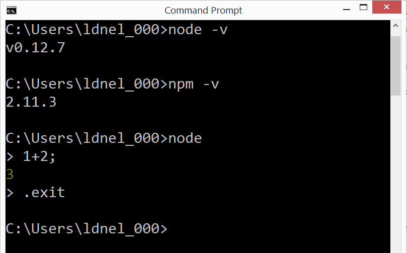
Here on the 2017 linux image:
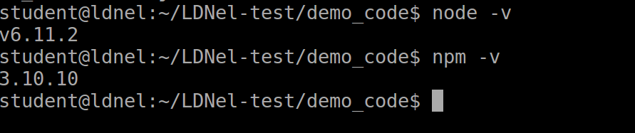
Problem 1)
Download the file in the tutotial 01 demo_code folder called 01_HelloWorld.js and place it in a convenient directory. Open a CMD terminal to the same directory.
In the CMD window execute: node 01_HelloWorld.js You should now have a simple server running listening for client requests coming to IP address 127.0.0.1 on port 3000. (You can stop the server by typing CNTL-C.)
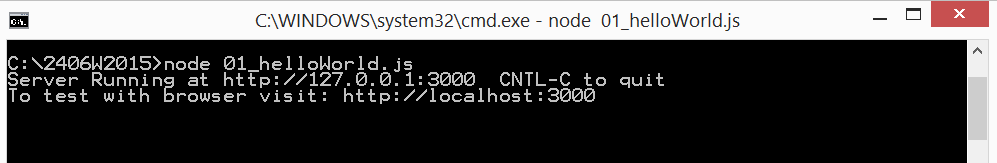
Open a web browser, like Chrome, Firefox, IE, or Safari, and go to the url address: http://localhost:3000 or alternatively http://127.0.0.1:3000 (This is the loopback address by which you can talk to yourself over the internet. localhost always maps to IP address 127.0.0.1) The screen captures are for the Chrome browser and the rest of the tutorial will discuss things from the point of view of the Chrome (the worlds most popular browser by far).
Your browser should show: "Hello World 1000" as shown below.
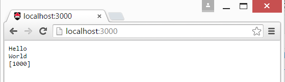
You now have a simple HTTP server running. Hit the page refresh a few times on your browser. See what happens to the number being output (does it appear to increment by 2 each time you refresh?)
You can quit the server, by typing CNTL-C in Windows.
Open the 01_HelloWorld.js file in your favourite text editor. The code should look something like:
/*
Hello World example to serving string to client
*/
//To test use browser to view http://localhost:3000
//Cntl+C to stop server
var http = require('http');
var counter = 1000;
http.createServer(function (request,response){
//respond to client
response.writeHead(200, {'Content-Type': 'text/plain'});
response.write('Hello\n');
response.write('World\n');
//end HTTP response and provide final data to send
response.end("["+ counter++ + "]\n");
}).listen(3000);
console.log('Server Running at http://127.0.0.1:3000 CNTL-C to quit');
console.log('To test with browser visit: http://localhost:3000');
Study this code and start to get familiar with this simple server. Is it obvious from this code why the counter might increment by two when the browser page is refreshed -probably not. You are not expected to understand all this syntax at this point, but start to notice the form (especially the nested declaration of a function with no apparent name.)
Next lets look at the network traffic between the browser and the server. We will describe this from the perspective of the Chrome browser (or Chromium on linux). (You will have to do some research to see how to locate the developer tools for other browsers if you don't want to use Chrome.)
Shut down the server (CNTL-C) and restart it to reset the counter.
This time open the Chrome brower but before you visit the page open its deveoper tools as follows. (Menu icon/More Tools/Developer Tools)
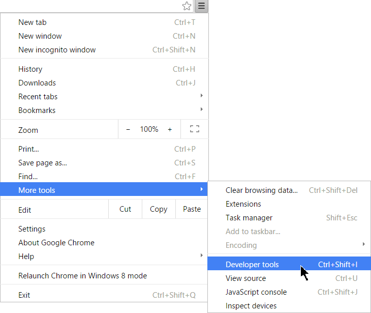
This should open the developer tools. Click on the Network tab to so it will show HTTP messages between the browser and the server.
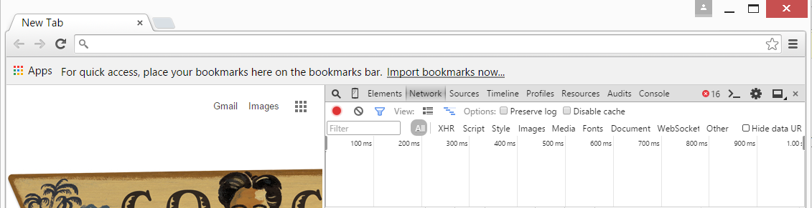
Now with the developer tool open visit http://localhost:3000 with the brower and you should see the traffic between the browser and your server.
It would appear that two messages are being sent to the server, one with the name localhost and one with favicon.ico (Could this explain why the counter is incrementing by two when we refresh the page). Try refreshing it a few times.
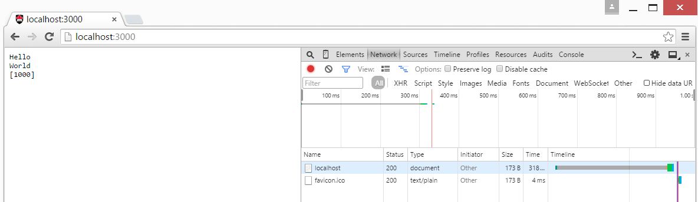
Click on the message marked "localhost" and it should open a details window as shown below (look in the Headers tab).
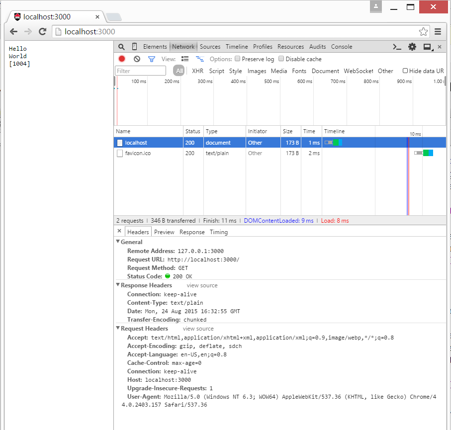
In this details window locate the following bits of information:
The URL being visited.
The HTTP request method (e.g. GET, POST, ...).
The status code of 200 back to the browser indicating success.
The MIME content type of the response data.
Look at some of the other information that is part of this message. The Request Headers are information that comes from the browser as part of the request and the Response Headers are part of the information that is sent back in response to the client.
The request and response mentioned in the previous question are in fact represented by the request and repsonse arguments in the createServer(function(request,response){...}); callback function. It is called a "callback" function because it will be "called back" when a HTTP request comes in. Basically the callback function examines the request object to see what the client wanted and builds up the response object to represent the response. Once the response is completed it is ended which results in an HTTP response being sent back to the client.
Next we are interested in actually getting access to some of this information right within our server javascript. That is, we want to extract information from the request object that arrived with the HTTP request.
Recall from the lecture demo that you can examine javascript objects by printing their key-value pair contents. Lets do that with the request object to extract information about what the client might want.
Add the following code to the server javascript (just before the part where we start writing to the response) and then restart the server.
console.log("request: " + request);
console.log("\nREQUEST OBJECT KEYS (own property):");
for(k in request) if(request.hasOwnProperty(k)) console.log("key: " + k);
This time when we run the server we should see output on the server console like the following.
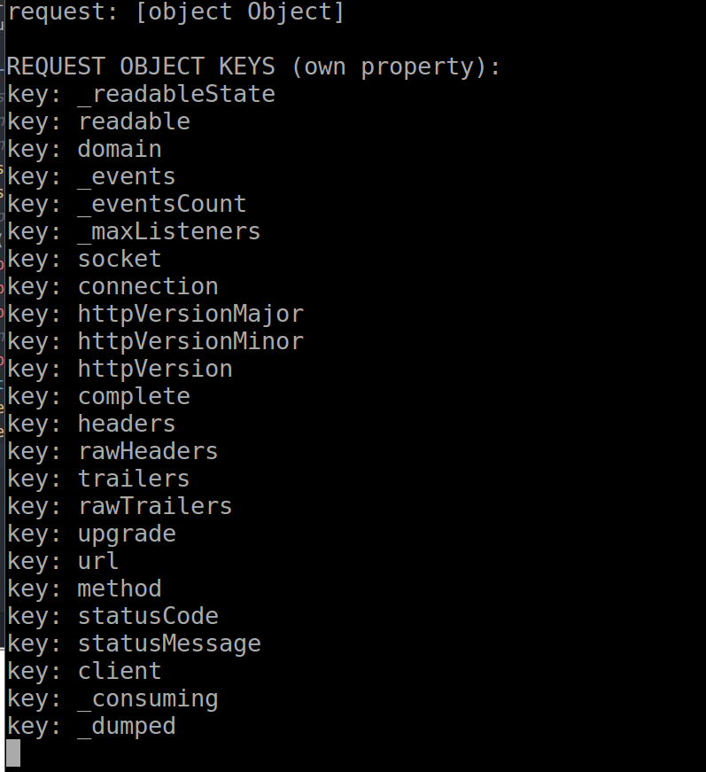
All objects in javascript are collections of key:value pairs. Here we are seeing all the keys of the request object. Keys are just javascript strings. Notice among this output we appear to be intercepting the URL of the resource the client is requesting and the HTTP method. Lets look at their values to see if they match what we saw in the browser.
Modify the code to only show those fields, So now our code would look like:
console.log("url: " + request.url);
console.log("method: " + request.method);
and the corresponding output would look like:
Now try visiting http://localhost:3000/index.html
The output should now show:
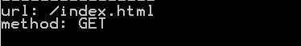
Finally try visiting http://localhost:3000/index.html?name=Louis and the output should be
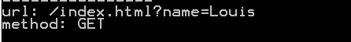
So we are able to intercept with our javascript the resource the client wants including the query string portion (the part after the "?").
It's also very useful to see the keys and values of the request object's headers.
Try adding the following code and see what you get. What do you suppose this information from the client message might represent?
console.log("request headers:");
console.log(request.headers);
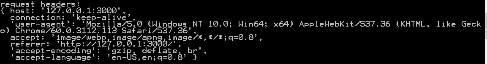
In the next problem we would like to respond to the client based on the name that they would like to be addressed by.
Problem 4)
Finally, if the client visits http://localhost:3000/index.html?name=Louis we want the server to respond with "Hello Louis" instead of "Hello World". Obviously we want it to work with any name -including yours.
So we want to extract the portion of the URL string after ?name= and use that to replace "World". To keep things simple lets just make it to work if the URL string ends with ?name=aName. We will just do some javascript substring operations to extract the name. For example
replace the line of code in the server:
response.write('World\n');
with something like the following instead:
var urlString = request.url;
var index = urlString.indexOf("?name=");
if(index > 0) {
var name = urlString.substring(index + "?name=".length, urlString.length);
response.write(name + "\n");
}
else response.write('World\n');
Now when we visit http://localhost:3000/index.html?name=Louis we should see output like:
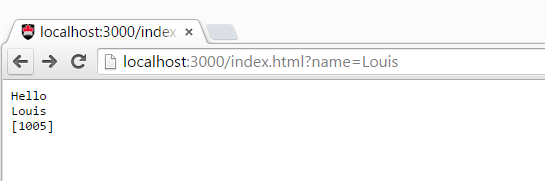
Optional)
Our proposed solution to the previous problem would work for visiting http://localhost:3000/index.html?name=Louis but would not work if the client visits URL's like:
http://localhost:3000/index.html?name=Louis&email=ldnel.com
Can you make it work more generally. That is, extract the ?name= portion from a more complex URL query string.
When you have completed these problems demonstrate your code to a TA's to get credit for the tutorial.